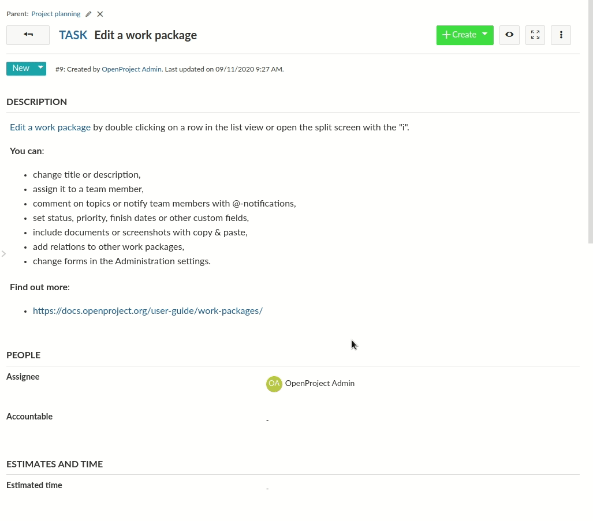
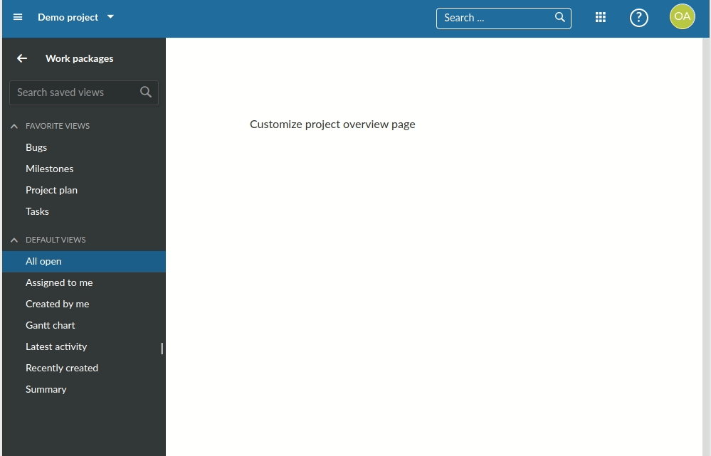
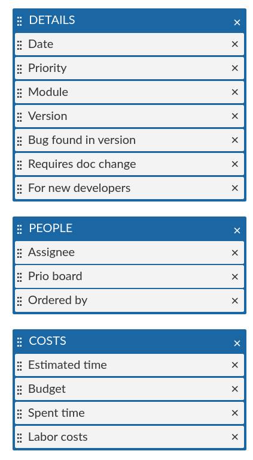
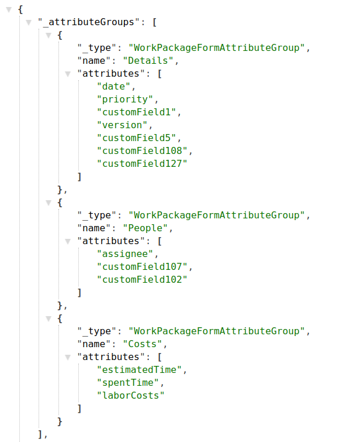
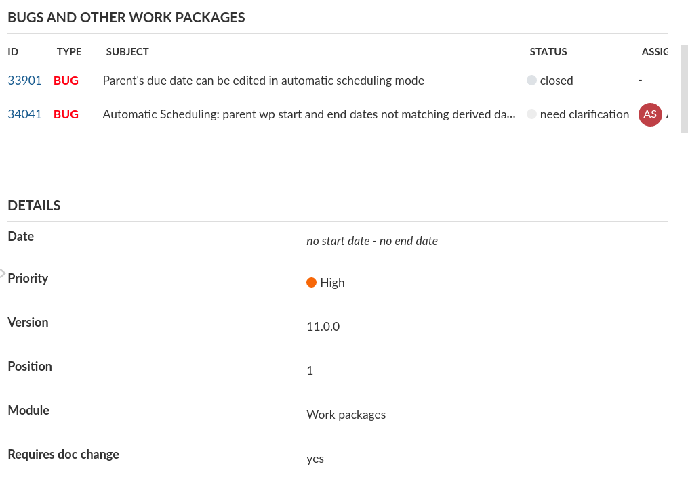
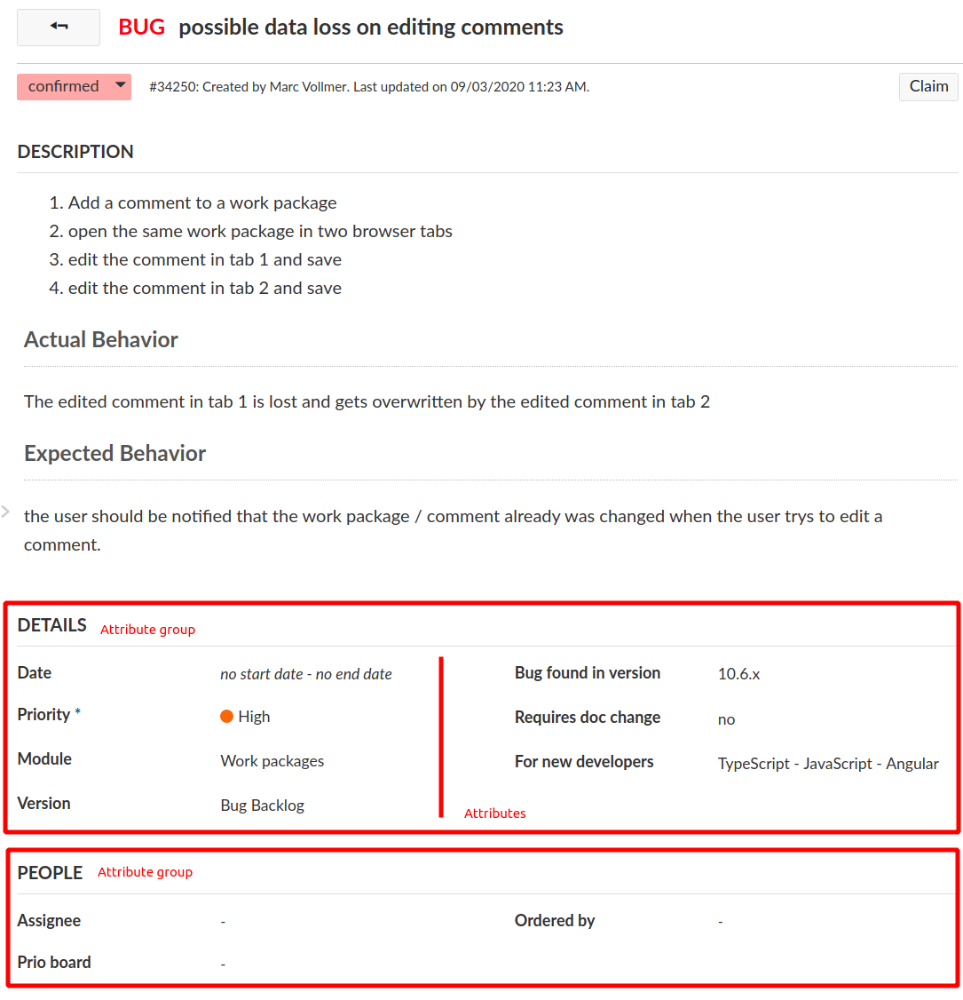

Inline editing is a core functionality of work packages and other attributes.

Inline editing …
DisplayField and EditField are two separate sets of classes to render attributes based on their schema typeIn order to understand Inline Editing, you will need the following concepts:
In order to understand the different modes of the inline edition functionality, we will first look at the components and code that handle displaying of resource attributes, the display fields.
The display fields handle showing read-only representation of a resource’s attribute. For example, the work package table may contain very different kinds of attributes: A progress bar, bare text fields, formatted date fields and the like.
Since OpenProject can also have dynamic custom fields with varying formats, the frontend cannot know all potential attribute names and their types. Instead, the available attributes of a resource are retrieved from its associated schema resource. For display fields, the important part of the schema definition for an attribute is its type attribute. Take a look at the JSON schema response for projects at the community: https://community.openproject.com/api/v3/projects/schema. For the sake of brevity, the following JSON will only show two of the returned attributes: The name and status attribute description:
"name": {
"type": "String",
"name": "Name",
"required": true,
"hasDefault": false,
"writable": true,
"minLength": 1,
"maxLength": 255,
"options": {}
},
"status": {
"type": "ProjectStatus",
"name": "Status",
"required": false,
"hasDefault": false,
"writable": true,
"options": {}
},
...
The type property will decide that for name, we’re looking for a display field that can handle String type, while for the project status attribute, we’re looking for a specific display type called ProjectStatus.
In the frontend, multiple display field classes exist and the DisplayFieldService resolves what display field class is going to be used for which attribute. There is a mapping file between the types returned by the API and the used display field class. In some cases such as for id, a specific field is set based on the attribute name, not its type.
With a resource and its schema present, there are multiple ways to render a display field for a given attribute.
DisplayFieldRendererSince parts of the application are rendered in plain JavaScript (such as the work package table), most display fields are actually rendered explicitly to a DOM element through the DisplayFieldRenderer#render method. You will only need the resource with its schema loaded and the attribute name.
The DisplayFieldRenderer requires the Angular injector for injecting services such as the DisplayFieldService. It’s instance will cache field types instantiated for performance reasons in large rendering contexts, such as the work package table.
Minimal example, rendering the status attribute of a work package to the element of the exemplary component:
@Component({ selector: 'minimal-example', template: '' })
export class ExampleComponent implements OnInit {
// The work package to render
@Input() workPackageId:string;
constructor (private elementRef:ElementRef,
private injector:Injector,
private apiV3Service:ApiV3Service) {}
ngOnInit() {
this
.apiV3Service
.work_packages
.id(this.workPackageId)
.get()
.subscribe(workPackage => {
const fieldRenderer = new DisplayFieldRenderer(injector, 'table');
const displayElement = fieldRenderer.render(workPackage, 'status', null);
this.elementRef.nativeElement.appendChild(displayElement);
});
}
}
The third parameter of the render method is to provide a changeset. This allows to render the value notfrom the pristine work package, but from a temporary changeset of the work package:
// Assuming we changed the subject property
const changeset = new WorkPackageChangeset(workPackage);
DisplayFieldComponentTo render an attribute of a HAL resource explicitly, a display field can be used through the DisplayFieldComponent. In most cases, you will not render the display field alone as it would expect to inline editable. This is why when it’s used, it often explicitly disables the writable CSS styles with writable: false set.
Minimal example, rendering the status attribute of a work package
<display-field [resource]="workPackage"
[displayFieldOptions]="{ writable: false }"
fieldName="status">
</display-field>
This will result in the work package status field being rendered including its status color, but without any CSS styles that mark the field as editable (cursor, hover border).
The DisplayFieldComponent will internally use the DisplayFieldService to find the matching field for the Status type and manually render the field to an inner HTML element.
The editable counterpart to a display field that renders the actual HTML form elements (A text or number input field, a boolean checkbox, or a WYSIWYG editor area).
Edit fields are also working on a single attribute of a resource. The schema property Type will again determine the component type to render.
EditFieldComponentThe main component that handles rendering of the actual <input> fields of the edit fields is the EditFieldComponent. It is subclassed for every type of edit fields, such as the TextEditFieldComponent or FloatEditFieldComponent, and so on. You can find all edit field types in the Angular fields module.
EditFieldComponents operates on a changeset of the resource that’s being edited. All changes are being written into this changeset, so they can be aggregated and saved, or reset on an individual level.It is never directly used from within a template, but through a service that passes in the appropriate inputs. We will take a deeper look at this service later and the reasoning behind it.
Inline-editing is usually connected to not only a single, but multiple fields of a resource. Each inline-editable field resides within a container that we call an EditForm.
The EditForm logically groups together multiple field elements very similar to how a <form> tag encapsulates a set of inputs. It is tied to a (HAL) resource input.
It has multiple responsibilities:
The EditableAttributeField contains the logic to toggle between the display and edit states of a single attribute for the resource. The field will try to register to a parent form by injecting it through its constructor. Only fields within an EditForm parent are editable.
The EditableAttributeField basically contains only two HTML elements that it wraps. These are used for the display and edit modes. Each is handled by their own DisplayField and EditField classes and components, as we will detail in the following.
OpenProject often renders Angular components in manually rendered DOM, prominently so in the work package table for improved rendering time. This is from the time the project was still using AngularJS and large scale rendering components was quite slow.
To easily mount an edit field over a manually rendered DisplayField (such as from the DisplayFieldRenderer above), OpenProject uses the EditingPortalService to create an Angular CDK portal.
The EditingPortalService will render a EditFormPortalComponent with some HTML form wrapping for correct handling of submit events and labels. This portal will in turn render the actual EditFieldComponent. The service will wire up these components automatically.
If you were to explicitly render an edit field, this would look as follows. Note that again, this is handled by the EditForm automatically whenever the user activates an EditableAttributeFieldComponent field.
@Component({ selector: 'minimal-example', template: '' })
export class ExampleComponent implements OnInit {
// The work package to render
@Input() workPackageId:string;
constructor (private elementRef:ElementRef,
private injector:Injector,
// Parent EditForm required
private editForm:EditFormComponent,
private apiV3Service:ApiV3Service) {}
ngOnInit() {
this
.apiV3Service
.work_packages
.id(this.workPackageId)
.get()
.subscribe(workPackage => {
return this.editingPortalService.create(
this.elementRef.nativeElement,
this.injector,
this.editForm,
workPackage.schema, // Schema of the work package
'subject', // Attribute field name
[] // Array of saving errors for error-style rendering
);
});
}
}
There is one more class involved in this stack, the EditFieldHandler. It implements an adapter pattern to break the connection between the input-only characteristics of the EditFieldComponent and the handling of events towards an outer wrapper such as the EditForm. They are regular classes that handle events from the EditFieldComponent to make them reusable in cases where, for example, an EditForm does not exist.
Any user event that should trigger saving or resetting of the field is being handled by the EditFieldHandler, hence its name. For example, pressing ESC on a TextEditFieldComponent will trigger the EditFieldHandler#handleUserCancel method. The same is true for submit events on the field or form (e.g., pressing ENTER on the field), which trigger the EditFieldHandler#handleUserSubmit method.
An example where this comes into play is the CustomText widget of the dashboards and my page, which use the <edit-form-portal> manually and pass in a handler that handles saving of these widgets without access to an edit form.
EditForm base classEditFormComponent Angular <edit-form> componentEditableAttributeFieldComponent Angular <editable-attribute-field> component for attributes within the edit formDisplayField definitions containing all display fields and the service to instantiate them.DisplayFieldRenderer to manually render display fields from JavaScriptDisplayFieldComponent an Angular component to render display fieldsEditFieldComponent definitions containing all display fields and the service to instantiate themEditingPortalService service to create an edit field with event handling in codeWorkPackageFullViewComponent Work package full view template that uses the edit-form attribute to create a form for the work package full view (as seen in the Gif above)ProjectDetailsComponent Exemplary widget template that uses the form for project attributesThe ProjectDetailsComponent is a very isolated example showing how to use the edit-form together with EditableAttributeField component to show the actual inline-editable field.
On the example of a work package, this following code snippet would create an edit form for a given work package resource and an attribute for the subject attribute of that work package.
<edit-form *ngIf="workPackage" [resource]="workPackage">
<editable-attribute-field [resource]="workPackage"
fieldName="subject">
</editable-attribute-field>
</edit-form>
While this doesn’t take care of any labels or styling, it will already provide error handling for the given field and allow proper saving of the changes to the resource.

The work package single view is the boss fight of inline editing. It combines all the previous concepts with the flexibility of work package attributes and type configuration.
The following screenshot is bug report #34250, which is a work package of Type Bug. The Bug type has a specific form configuration defined. This configuration is as follows:

The Bug has three attribute groups defined with a set of attributes in it. These attributes correspond to the attribute groups in the single view.
If we take a look at the XHR requests on the bug page, we see that a request is being made to the schema https://community.openproject.com/api/v3/work_packages/schemas/14-1, which is the work package schema for project ID=14 (openproject on community), and the type ID=1 (Bug type). It contains the attribute definitions of the work package schema and the enabled attribute groups with their attribute definitions:

We can see the three groups as defined in the administration are being transmitted to the frontend through the _attributeGroups property.
The type defines which type of group is being rendered. The attribute group is the most common, rendering a set of attributes. It is also possible to render an embedded work package table for related work packages such as in the following exemplary Epic #25624:

The WorkPackageSingleViewComponent turns this definition into a template through its method rebuildGroupedFields. The template iterates over these and outputs the appropriate attribute or query group.

In the end, each of the attributes in the two groups above are a EditableAttributeField, and the entire page wraps these attributes in an EditFormComponent.
EditForm has a similar responsibility to what Angular offers with the FormGroup/FormControl logic of the reactive forms module. It would be useful to evaluate the possibility and effort to refactor the edit form into such a behavior. Currently, as the table is rendered in plain JavaScript and relies on the edit form, this may not be possible.EditFieldHandler class can likely be reduced into an interface that is implemented by both the EditFieldComponent and other classes using it such as CustomTextComponent and WorkPackageCommentComponent